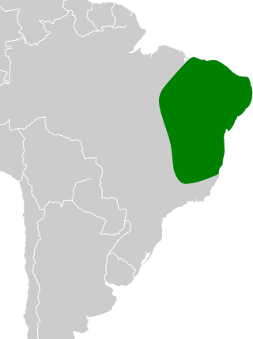

Corrupião
.jpg)
Nome científico:(Icterus jamacaii Gmelin, 1788)
Nome comum:Corrupião
Classificação biológica:
Domínio: Eukaryota.
Reino: Animalia.
Filo: Chordata.
Classe: Aves.
Ordem: Passeriformes.
Família: Icteridae.
Gênero: Icterus.
Espécie: Icterus jamacaii.
Nutrição: Onívoro.
Hábitos alimentares:Alimenta-se de frutas, insetos, pequenos invertebrados e, ocasionalmente, néctar. É também conhecido por invadir ninhos de outras aves em busca de ovos ou filhotes.
Morfologia do corpo:Mede entre 21 e 24 cm de comprimento, com um bico fino e levemente curvado. Seu peso varia entre 60 a 70 gramas.
Comportamento:O corrupião é uma ave ativa e territorial, conhecida por seu canto melodioso e a capacidade de imitar outros sons. Os machos defendem vigorosamente seu território. Alimenta-se de frutas, sementes, insetos e néctar, e é conhecido por ocupar ninhos de outras aves.
Principais Presas:Pequenos insetos, como formigas, cupins e aranhas, além de ovos e filhotes de outras aves, que fazem parte de sua dieta omnívora.
Principais Predadores:Aves de rapina, como gaviões e falcões, além de serpentes e pequenos mamíferos carnívoros. Esses predadores podem atacar tanto os ovos quanto os filhotes, especialmente nos ninhos.
Locais habitados
Distribuição:Nos biomas da Caatinga e do Cerrado
Habitat:O corrupião prefere áreas abertas e semiabertas, como bordas de florestas, cerrados, caatingas e áreas urbanas com vegetação. Eles se alimentam de frutas, sementes, insetos e néctar, e são frequentemente vistos em jardins e parques.
Reprodução:O corrupião constrói ninhos em forma de taça suspensa em galhos de árvores. A fêmea geralmente põe de 2 a 3 ovos, que são incubados por aproximadamente 14 dias. Os filhotes deixam o ninho após cerca de 20 dias. Ambos os pais participam dos cuidados com os filhotes.